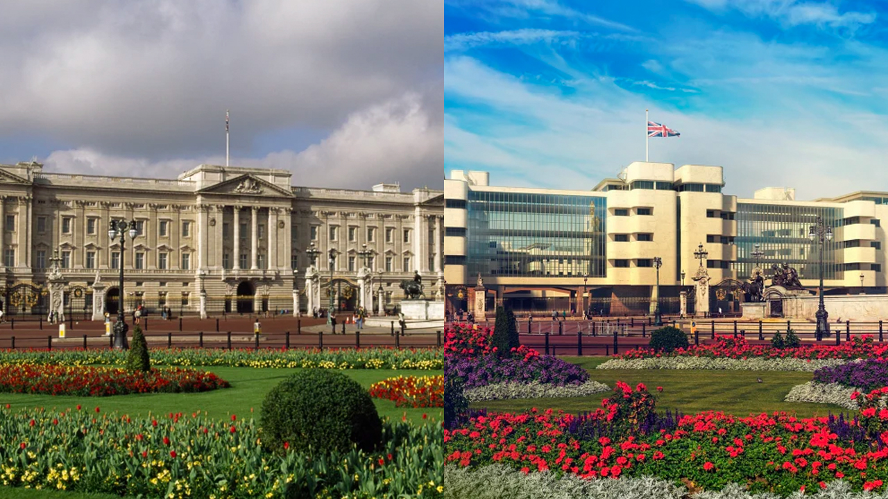
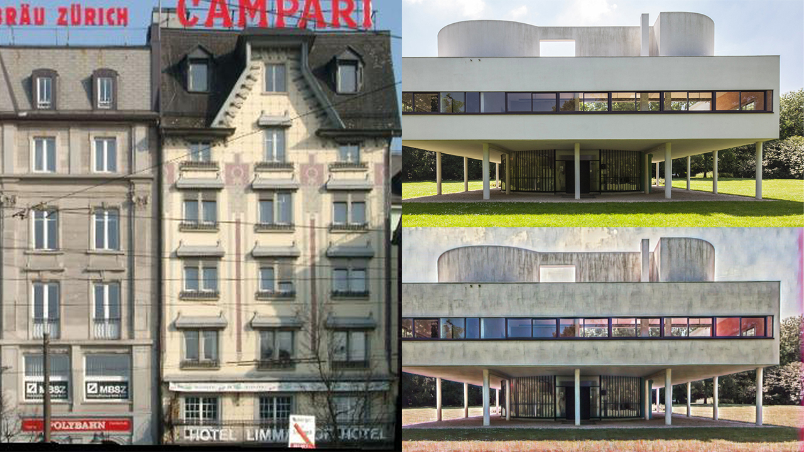
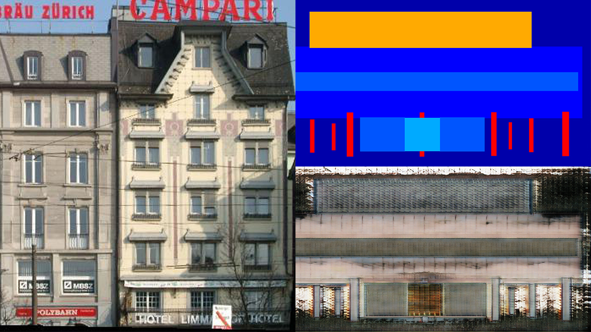
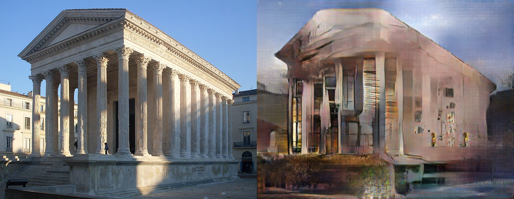
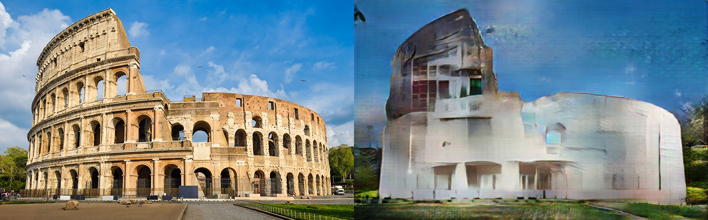
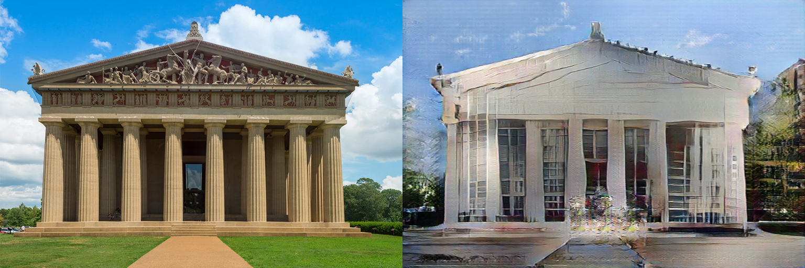
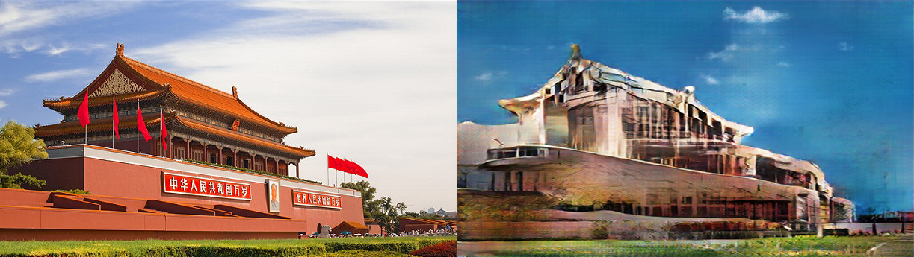

NOTE: This is my undergraduate thesis project supervised by Dr. Rynson LAU, expected to be finished in April 2022.
An interactive application will be set up to realize the following pipeline with the trained deep learning model: 1) Users input photos of buildings. 2) The styles of buildings are recognized by the classification model. 3) Users choose new architectural styles existing in the model and the application transfer the new styles to the photos.
The examples from various visual artists in this website perfectly interpret the meaning of "transferring architectural styles", which I would like to automate with deep learning technologies.

An example from the link above, showing a Bauhaus Style (Right) transferred onto Buckingham Palace (Left).
Now I'm focusing on how to define and achieve "transferring" for architectural styles. It's a hard problem since such styles are defined by both material textures and structural features in various scales.
I've made some tests on several existing models, including painting style transfer with Artflow, Conditional Generative Adversarial Networks with Pix2pix to examine the possibilities of different approaches. The images below are examples showing corresponding challenges.

This example by Artflow + WCT shows that popular style transfer models may not be suitable with this task as only the color and a small trace of texture from the style image (left) are being transferred (bottom right) on to the content image (top right).

This example by Pix2pix and CMP facade labeling (top right) creates unrecognizable images (bottom right) because of the large difference in appearance of windows between sample buildings in databese (left) and input house (top right, the same as previous house).

This example video from using Pix2pix trained with 450 depth images generated by DiverseDepth is currently the best one, the smoothness of which is already impressive. However, there're still significant glitches and unusual movements.
Obviously, increasing the size of training set helps improve the result. The results below come from a model trained from 1444 photos of modernist and postmodernist buildings. However, it can be noticed that the results still more or less failed to preserve the original 3D primitive shapes and the facades are flat.



